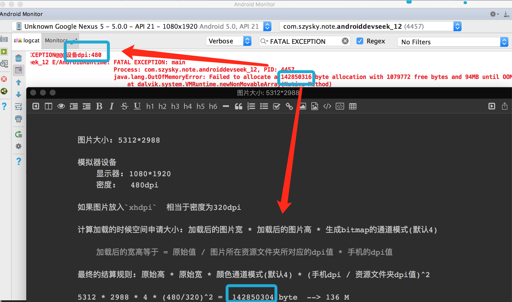
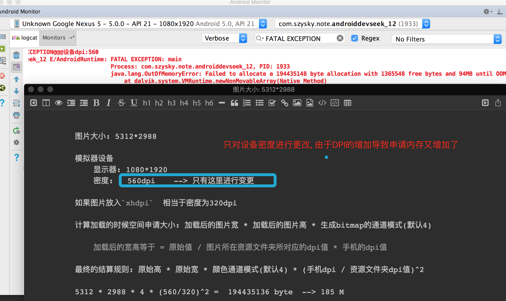
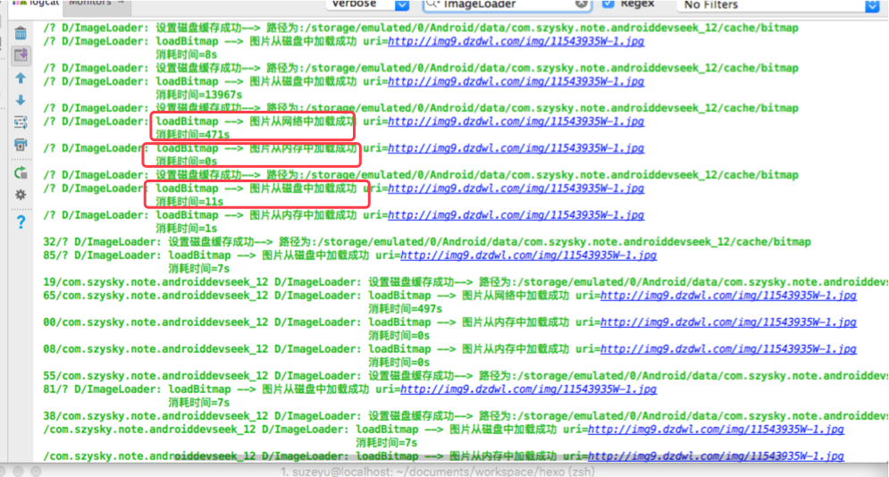
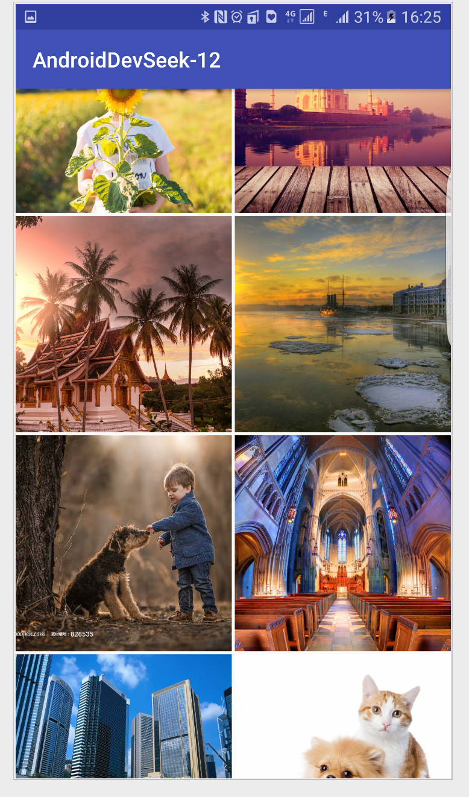

由于Bitmap的特殊性以及Android对单个应用所施加的内存限制, 会导致加载Bitmap的时候很容易出现内存溢出. 还有常用的缓存策略.
Bitmap的高效加载
先来简单介绍一下如何加载一个Bitmap, Bitmap在android中指的是一张图片, 可以是png格式也可以是jpg等其他常见的图片格式.
**那么如何加载一个图片?**首先BitmapFactory类提供了四种方法: decodeFile(), decodeResource(), decodeStream(), decodeByteArray(). 分别用于从文件系统, 资源文件, 输入流以及字节数组加载出一个Bitmap对象. 其中decodeFile和decodeResource又间接调用了decodeStream()方法, 这四类方法最终是在Android的底层实现的, 对应着BitmapFactory类的几个native方法.
**高效加载的Bitmap的核心思想:**采用BitmapFactory.Options来加载所需尺寸的图片. 比如说一个ImageView控件的大小为300*300. 而图片的大小为800*800. 这个时候如果直接加载那么就比较浪费资源, 需要更多的内存空间来加载图片, 这不是很必要的. 这里我们就可以先把图片按一定的采样率来缩小图片在进行加载. 不仅降低了内存占用,还在一定程度上避免了OOM异常. 也提高了加载bitmap时的性能.
而通过Options参数来缩放图片: 主要是用到了inSampleSize参数, 即采样率.
- 如果是inSampleSize=1那么和原图大小一样,
- 如果是inSampleSize=2那么宽高都为原图1/2, 而像素为原图的1/4, 占用的内存大小也为原图的1/4
- 如果是inSampleSize=3那么宽高都为原图1/3, 而像素为原图的1/9, 占用的内存大小也为原图的1/9
- 以此类推…..
要知道Android中加载图片具体在内存中的占有的大小是根据图片的像素决定的, 而与图片的实际占用空间大小没有关系.而且如果要加载mipmap下的图片, 还会根据不同的分辨率下的文件夹进行不同的放大缩小.
列举现在有一张图片像素为:1024*1024, 如果采用ARGB8888(四个颜色通道每个占有一个字节,相当于1点像素占用4个字节的空间)的格式来存储.(这里不考虑不同的资源文件下情况分析) 那么图片的占有大小就是1024*1024*4那现在这张图片在内存中占用4MB.
如果针对刚才的图片进行inSampleSize=2, 那么最后占用内存大小为512*512*4, 也就是1MB
采样率的数值必须是大于1的整数是才会有缩放效果, 并且采样率同时作用于宽/高, 这将导致缩放后的图片以这个采样率的2次方递减, 即内存占用缩放大小为1/(inSampleSize的二次方). 如果小于1那么相当于=1的时候. 在官方文档中指出, inSampleSize的取值应该总是为2的指数, 比如1,2,4,8,16,32…如果外界传递inSampleSize不为2的指数, 那么系统会向下取整并选择一个最接近的2的指数来代替. 比如如果inSampleSize=3,那么系统会选择2来代替. 但是这条规则并不作用于所有的android版本, 所以可以当成一个开发建议
整理一下开发中代码流程:
- 将
BitmapFactory.Options的inJustDecodeBounds参数设置为true并加载图片. - 从
BitmapFactory.Options取出图片的原始宽高信息, 他们对应于outWidth和outHeight参数 - 根据采样率的规则并结合目标View的所需大小计算出采样率
inSampleSize - 将
BitmapFactory.Options的inJustDecodeBounds参数设为false, 然后重新加载.
第一个步骤设置了一个参数, 这个参数的作用就是在加载图片的时候是否只是加载图片宽高信息而不把图片全部加载到内存. 所以这个操作是个轻量级的.
通过这些步骤就可以整理出以下的工具加载图片类调用decodeFixedSizeForResource()即可.
public class MyBitmapLoadUtil { |
当给ImageView设置的时候传入控件的大小, 就会自动转换返回. 可以看一下下面的两张图, 当加载一个分辨率很大的图片如果不使用此方法那么就出程序崩溃
了解一下一个原始图片到手机显示的最终占用内存大小


Android中的缓存策略
目前常用的一种缓存算法是LRU(Least Recently Used), 最近最少使用算法. 核心思想: 当缓存存满时, 会优先淘汰那些近期最少使用的缓存对象. 采用LRU算法的缓存有两种: LruCache和DiskLruCache,LruCache用于实现内存缓存, DiskLruCache则充当了存储设备缓存, 当组合使用后就可以实现一个类似ImageLoader这样的类库.
LruCache
LruCache是Android 3.1所提供的一个缓存类, 通过support-v4兼容包可以兼容到早期的Android版本
LruCache是一个泛型类, 它内部采用了一个LinkedHashMap以强引用的方式存储外界的缓存对象, 其提供了get和put方法来完成缓存的获取和添加的操作. 当缓存满了时, LruCache会移除较早使用的缓存对象, 然后在添加新的缓存对象. 普及一下各种引用的区别:
- 强引用: 直接的对象引用
- 软引用: 当一个对象只有软引用存在时, 系统内存不足时此对象会被gc回收
- 弱引用: 当一个对象只有弱引用存在时, 对象会随下一次gc时被回收
创建的缓存对象大小通过可用内存的1/8来进行分配, 并需要重写sizeOf()方法, sizeOf()是计算缓存对象的大小, 如果有需要还可以重写entryRemoved(),在Lru移除旧缓存的时候回调用此方法.
获取, 添加, 删除, 分别对应get, put, remove
DiskLruCache
DiskLruCache用于实现存储设备缓存, 即磁盘缓存. 它通过将缓存对象写入文件系统从而实现缓存的效果.
1. DiskLruCache的创建
DiskLruCache并不能通过构造方法来创建, 他提供了open()方法用于创建自身, 如下所示
public static DiskLruCache open(File directory, int appVersion, int valueCount, long maxSize) |
这个方法有四个参数:
File directory: 表示磁盘缓存在文件系统中的存储路径. 可以选择SD卡上的缓存目录, 具体是指/sdcard/Andriod/data/package_name/cache目录, package_name表示当前应用的包名, 当应用被卸载后, 此目录会一并删除掉. 也可以选择data目录下. 或者其他地方. **这里给出的建议:**如果应用卸载后就希望删除缓存文件的话 , 那么就选择SD卡上的缓存目录, 如果希望保留缓存数据那就应该选择SD卡上的其他目录.int appVersion: 表示应用的版本号, 一般设为1即可. 当版本号发生改变的时候DiskLruCache会清空之前所有的缓存文件, 在实际开发中这个实用性不大.int valueCount: 表示单个节点所对应的数据的个数, 一般设为1.long maxSize: 表示缓存的总大小, 比如50MB, 当缓存大小超出这个设定值后,DiskLruCache会清除一些缓存而保证总大小不大于这个设定值.
2. DiskLruCache的缓存添加
DiskLruCache的缓存添加的操作是通过Editor完成的, Editor表示一个缓存对象的编辑对象.
如果还是缓存图片为例子, 每一张图片都通过图片的url为key, 这里由于url可能会有特殊字符所以采用url的md5值作为key. 根据这个key就可以通过edit()来获取Editor对象, 如果这个缓存对象正在被编辑, 那么edit()就会返回null. 即DiskLruCache不允许同时编辑一个缓存对象.
当用.edit(key)获得了Editor对象之后. 通过editor.newOutputStream(0)就可以得到一个文件输出流. 由于之前open()方法设置了一个节点只能有一个数据. 所以在获得输出流的时候传入常量0即可.
有了文件输出流, 可以当网络下载图片时, 图片就可以通过这个文件输出流写入到文件系统上. 别忘了使用Bufferedxxxxx写完之后, 要通过Editor中commit()来提交写操作, 如果下载中发生异常, 那么使用Editor中abort()来回退整个操作.
3. DiskLruCache的缓存查找
和缓存的添加过程类似, 缓存查找过程也需要将url转换成key, 然后通过DiskLruCache#get()方法可以得到一个Snapshot对象, 接着在通过Snapshot对象即可得到缓存的文件输入流, 有了文件输入流, 自然就可以得到Bitmap对象. 为了避免加载图片出现OOM所以采用压缩的方式. 在前面对BitmapFactory.Options的使用说明了. 但是这中方法对FileInputStream的缩放存在问题. 原因是FileInputStream是一种有序的文件流, 而两次decodeStream调用会影响文件的位置属性, 这样在第二次decodeStream的时候得到的会是null. 针对这一个问题, 可以通过文件流来得到它所对应的文件描述符, 然后通过BitmapFactory.decodeFileDescription()来加载一张缩放后的图片.
ImageLoader的实现
一个好的ImageLoader应该具备以下几点:
- 图片的压缩
- 网络拉取
- 内存缓存
- 磁盘缓存
- 图片的同步加载
- 图片的异步加载
也可以利用picasso和glide这种图片加载类库, 使用构建者模式提供使用. 本文练习demo实现了链式调用设置控件,并制定url然后自动去获取. 相关联的类在load包中
可以看看有了缓存的区别

ImageLoader的使用
照片墙效果
这里定义一个自定义的ImageView作为GridView的item布局控件, 之所以这样是想让图片的控件自动去使用设备达到宽高相等的效果比较好看些
public class SquareImageView extends ImageView { |
这个实现很简单, 利用动态的宽度同时也当做高度即可实现预期的效果.

这个就是结果, 或许应该对网络加上判断非wifi给一个提示, 可能首次加载会需要比较多的流量.
// 根据连接网络的情况判断是否加载图片 |
然后优化列表 只有在GridView静止的时候才进行图片加载, 避免滑动时候的无谓的线程加载消耗(即使ImageLoader内部使用了线程池, 你仍然有这么做的必要)
GridView gv_main = (GridView) findViewById(R.id.gv_main); |
最后在adapter中的getView()设置标记位的判断, 只有在wifi和静止的状态下才进行加载请求下面是getView()代码
|